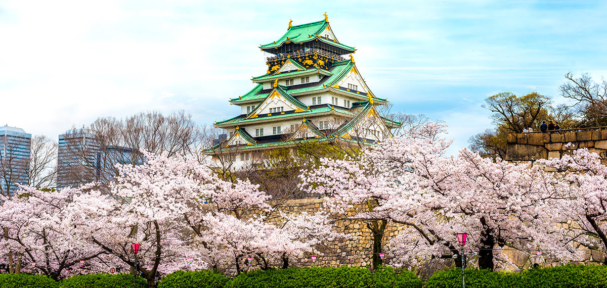

O Japão é um país asiático banhado pelo oceano Pacífico. Seu território é formado por milhares de ilhas, das quais se destacam quatro: Honshu, a maior delas e onde fica a capital japonesa, Tóquio, Hokkaido, Shikoku e Kyushu. Situado em uma das áreas mais geologicamente instáveis do mundo, o Japão possui um relevo montanhoso que influencia a distribuição de umidade pelo país. Dois climas são predominantes, o temperado e o tropical. O país possui uma população de mais de 126 milhões de habitantes, além de uma economia altamente desenvolvida e reconhecida pela utilização de avançada tecnologia no setor industrial.
Curiosidades sobre o Japão
- Culinária japonesa
- Expectativa de vida
- Comportamento dos japoneses
- Moda
- Superstições japonesas
- O número quatro é considerado azarado, porque a palavra "quatro" em japonês soa semelhante a "morte". Por esse motivo, muitos prédios no Japão não têm o quarto andar ou o número quatro é simplesmente ignorado.
- Os gatos são considerados um símbolo de boa sorte no Japão. O Maneki-neko, um gato que acena a pata, é um símbolo popular de sorte e prosperidade.
- Se você tem uma toalha ou lenço vermelho, muitas pessoas acreditam que você terá boa sorte se colocar a toalha na sua cabeça antes de um teste ou exame importante.
- Influência cultural
A culinária japonesa vai muito além do sushi! Ela também é composta por massas, pratos com arroz, vegetais, carnes e frutos do mar (afinal, estamos falando de uma ilha). Mais uma das curiosidades sobre o Japão: sua culinária tradicional, conhecida como Washoku, é uma das duas únicas gastronomias reconhecidas como Patrimônio Imaterial Cultural pela ONU.
Japão possui a maior expectativa de vida do mundo: quase 84 anos. É comum que as pessoas passem dos 100 anos. Em 2021, os centenários eram mais de 86 mil! Ao chegar a esta idade, era comum as pessoas ganharem de presente do governo uma carta de felicitação e um prato banhado em prata, avaliado em 8 mil ienes. Porém, com o número de aniversariantes soprando 100 velinhas chegando a 29 mil em 2014, foi preciso encontrar um reconhecimento mais barato. O gasto em presentes já estava acima de US$ 2,1 milhões
O Japão é conhecido no mundo todo pelas atitudes respeitosas de sua população. Há inclusive uma variante formal da língua japonesa chamada keigo, utilizada para mostrar consideração e respeito pela pessoa com quem falamos. Basta um passeio pelas ruas japonesas para entender como tudo isso fica evidente, ou uma breve observação de como os japoneses tratam respeitosamente as pessoas mais velhas. Os costumes do Japão incluem respeitar filas, aguardar o sinal abrir para os pedestres (mesmo que não venha nenhum carro, ninguém atravessa no vermelho) e dar atenção às regras.
Existem vários estilos, como o ganguro, que mistura pele bronzeada, maquiagem branca nos olhos e nos lábios, cabelos claros e muitos (muitos mesmo) acessórios chamativos, como cílios postiços e roupas brilhantes. Outro que você talvez você conheça é o kigurumi, a tendência de usar pijamas de bichinhos fofos. Mas, ao contrário do Brasil, onde só as crianças usam, no Japão é comum ver homens e mulheres adultos com este look nas ruas. Ainda há o cosplay, muito difundido por aqui, em que as pessoas usam máscaras e fantasias com o objetivo de imitar seus personagens preferidos dos videogames, mangás e animes.
O Japão tem uma longa história de superstições, algumas das quais remontam aos tempos antigos. Aqui estão algumas das superstições mais populares no Japão:
O Japão tem uma cultura rica e influente em todo o mundo. Muitas coisas que utilizamos no dia a dia, como a tecnologia dos celulares e videogames, vieram do Japão. Além disso, a cultura pop japonesa, como os animes e mangás, têm um grande número de fãs ao redor do mundo. A arquitetura japonesa é outra grande influência cultural. Os templos budistas e xintoístas, por exemplo, têm um estilo único, com telhados curvos e estruturas de madeira em um formato tradicional. Esse estilo é conhecido como "arquitetura japonesa tradicional" e é muito admirado em todo o mundo.
Cidades do Japão: As mais famosas
| Cidades | Habitantes |
| Tokyo | 37.115.035 |
| Kyoto | 1.443.486 |
| Nara | 1.348.930 |
| Yokohama | 3.732.616 |
| Osaka | 18.967.459 |
| Fukuoka | 5.000.000 |
- Tokyo
- Kyoto
- Nara
- Yokohama
- Osaka
- Fukuoka
Considerada uma das cidades mais vibrantes do mundo, Tokyo é uma capital fantástica, completa e com opções ilimitadas. Ela oferece uma imersão em valores diferentes e nos proporciona um choque cultural nos mais diversos âmbitos. A cidade é viva noite e dia, tem ótimos pontos turísticos, excelente gastronomia (já foi considerada a cidade com mais restaurantes nos Guias Michelin) e é simplesmente um paraíso para fazer compras.
Moderna, cheia de letreiros com propagandas e com mais de 37 milhões de pessoas em sua região metropolitana (mais do que a população de muitos países), Tokyo sabe harmonizar seu crescimento e globalização ao tradicionalismo. Muito próximo de áreas de grande movimento, existem templos antigos e, ao lado de estações de trens complexas e cheias de gente, existem parques que funcionam como um refúgio de todo aquele burburinho urbano. Sua organização é mais uma característica marcante da capital, que destoa de muitas outras cidades na Ásia.

Antiga capital e berço da cultura japonesa, Kyoto é uma cidade tradicional, conhecida como o “coração do Japão”. Localizada no sul do país, na ilha de Honshu, a cerca de 550 km de Tokyo, a cidade possui em torno de 1,5 milhões de habitantes e encanta aos mais de 50 milhões de turistas que a visitam a todos os anos. Ela foi capital do país por mais de um milênio, quando em 1868 foi substituída por Tokyo (antiga Edo), e resgata a história e a cultura japonesa.
Mais moderna do que realmente parece, Kyoto é um destino imperdível e um lugar ímpar para entender os costumes japoneses, sua cultura antiga e para ver de perto uma arquitetura diferente de diversos outros destinos no mundo. A antiga capital, que já teve outros nomes antes do atual, reúne obras arquitetônicas, que são tesouros nacionais, e lindos jardins, que ficam ainda mais incríveis durante o início da primavera, marcada pela florada das cerejeiras, e durante o outono, com folhagens das árvores coloridas.

Nara está a cerca de 45 km de Kyoto e o trajeto de trem entre as duas cidades dura menos de uma hora. Embora Nara seja pequena e não atraia o sucesso de sua vizinha Kyoto, a cidade tem alguns tesouros culturais e vale muito a pena visitá-la, mesmo que seja em um passeio bate-volta.
Como o trem é um transporte muito eficiente, é esse o meio mais prático para chegar à cidade. Ao desembarcar da estação de Nara, procure pelo centro de informações turísticas, ao lado da estação, que reúne todas as informações que você poderá precisar e ainda irá fornecer um mapa para facilitar seu deslocamento.
As atrações mais importantes de Nara estão dentro do Nara Park, um parque público muito grande. O próprio Nara Park é uma atração da cidade, tem dezenas de árvores e vários veados que ficam passeando pelos gramados e se aproximando dos turistas na esperança de ganharem um pouco de comida. Os veados são animais selvagens, mas você pode se aproximar deles, tirar fotos e até comprar alguns biscoitinhos para alimentá-los.
Dentro do parque, estão as atrações mais procuradas da cidade e são elas que recomendamos que você visite em um bate-volta. O Todai-ji Temple(東大寺) é uma das dessas atrações e um local que consideramos imperdível! O templo é enorme e quando você se surpreendente olhando a construção pelo lado de fora, fica ainda mais surpreso ao visitar seu interior e notar o Buda gigante que nele está! A estátua de bronze tem em torno de 15 metros e é um dos símbolos de Nara. O edifício do templo é considerado uma das maiores estruturas de madeira do mundo e tudo nesse lugar impressiona, desde o tamanho do templo ao tamanho do seu portal de entrada! Dentro do templo, existe uma coluna de madeira com um buraco e os japoneses acreditam que dá bastante sorte passar por esse buraco, mas como o espaço é pequeno, geralmente apenas as crianças tentam passar por ali.
Também no parque, uma outra atração interessante é o Santuário Kasuga Taisha(春日大社), conhecido por suas dezenas de lanternas (muitas delas de bronze), que estão localizadas tanto no exterior quanto no interior de seus edifícios. As lanternas só costumam ser ligadas duas vezes por ano, durante o Festival das Lanternas, mas nos fundos do local existe uma pequena sala escura, onde você pode vê-las acesas.

Yokohama é uma cidade vibrante e moderna, que mistura a tradição japonesa com a chinesa e a ocidental. Seja para saborear uma deliciosa culinária, mergulhar na cultura e na história ou contemplar vistas espetaculares, a área dentro e ao redor desta joia do Japão oferece opções para todos.
É uma importante cidade do Japão, com uma sólida base econômica, além de ser considerada um dos melhores destinos turísticos da Ásia.
Se parece muito com Tóquio, mas tem seu charme peculiar, notado tanto na arquitetura quanto nos lugares para comer e se divertir.
Tanto quanto a capital, é uma cidade moderna, movimentada e muito iluminada.
Se deseja conhecer e curtir uma viagem a uma grande metrópole asiática, a cidade de Yokohama é o destino perfeito, oferecendo atrações para todos os gostos.
Além de oferecer uma abundância incrível de restaurantes que oferecem todo tipo de cozinha concebível e locais de compras suficientes para mantê-lo ocupado por um bom tempo. Os fãs da culinária chinesa deveriam conhecer mais de perto os 300 ou mais restaurantes na Chinatown de Yokohama.Chinatown de Yokohama(横浜中華街).
Osaka fica a apenas uma curta distância de Tóquio por trem-bala, mas é uma cidade muito diferente da capital do Japão. Desça do trem-bala e entre em uma região de vida noturna agitada, culinária deliciosa e moradores locais simpáticos. Junto com muitas lojas e atrações modernas, Osaka também tem um lado histórico, cujo destaque é o Castelo de Osaka(大阪城). O castelo é um excelente local para saber mais sobre a história do Japão e para passear pelos belos jardins, especialmente durante a temporada da florada das cerejeiras em abril, quando a sakura floresce e o clima é geralmente mais agradável.

Fukuoka é a quinta maior cidade do Japão e está localizada na costa norte de Kyushu. A cidade é dividida em aproximadamente duas metades, Hakata e Tenjin , e a Ilha Nakasu está posicionada entre elas. Antigamente, essas áreas costumavam ser duas cidades separadas: a cidade mercantil de Hakata, a leste, e a cidade-castelo de Fukuoka (que incluía Tenjin), a oeste. As cidades se fundiram em 1889, dando origem à moderna cidade de Fukuoka.
Por sua vez, Nakasu(中洲) é a região da ostentação na cidade, e que só ganha vida depois que escurece.
O calor de Fukuoka, tanto da positividade dos locais quanto das temperaturas altas, levaram a cidade a ser chamada de Mediterrâneo do Japão. Na verdade, a cidade fica mais perto de Seul e Xangai do que de Tóquio, o que explica por que muitos dos turistas no Japão não irem a Fukuoka. No entanto, se você estiver procurando uma cidade mais relaxada para passar algum tempo além de Tóquio, Quioto ou Osaka, Fukuoka é ideal para você.
GabiHebi蛇